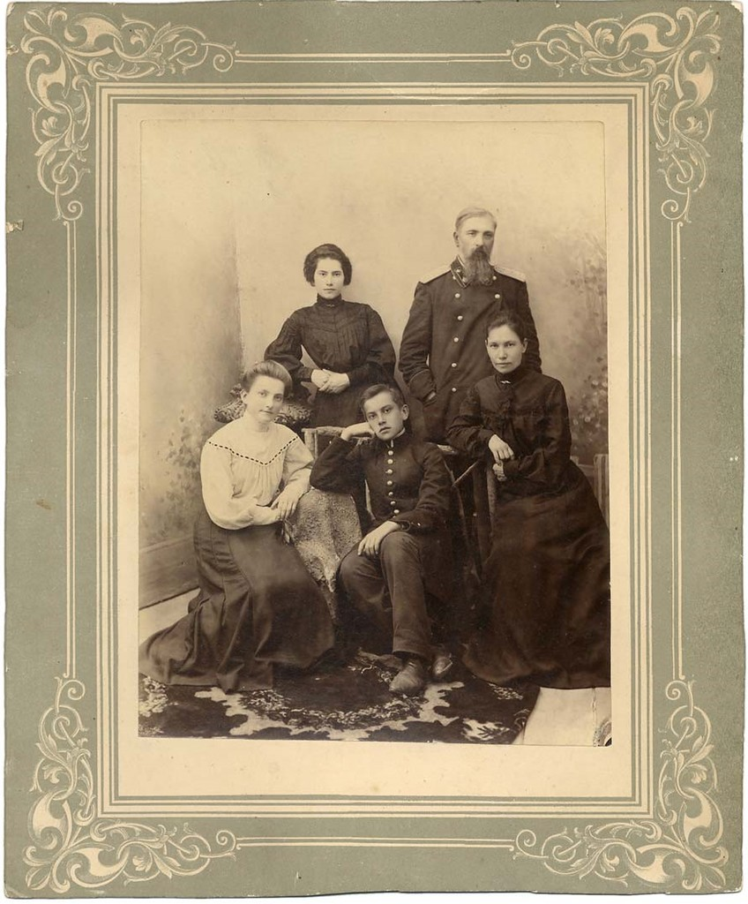
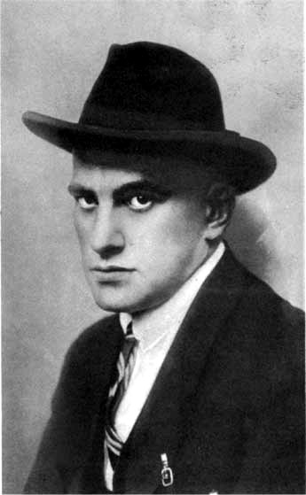

Некоторые фотографии из жизни Маяковского


Биография
Рождение поэта
Родился 7 (19) июля 1893 года в селе Багдади, в Грузии, в семье лесничего. У Маяковского было 2 сестры, а 2 его брата умерли, еще будучи детьми.
Источник
Юные годы
В 1906 году переехал в Москву вместе с матерью, начал учиться в гимназии №5. Революция Маяковского не оставила в стороне. Из-за невозможности оплатить обучение он был исключен из гимназии. Затем Владимир Владимирович вступил в Российскую социал-демократическую рабочую партию.
Источник
Первые стихи поэта
Во время одного из арестов в тюрьме было написано первое стихотворение Маяковского (1909 г.). В 1911 году Маяковский поступил в Московское училище живописи. Затем он увлекся творчеством футуристов. Первое стихотворение Маяковского «Ночь» было опубликовано в 1912 году. В следующем году писатель создал трагедию «Владимир Маяковский», которую поставил сам и сыграл в ней главную роль.
Источник
Личная жизнь
Личные отношения у поэта складывались не легко. Первой его большой любовью стала Лиля Брик. Маяковский познакомился с ней в июле пятнадцатого года. Совместную жизнь начали в восемнадцатом году. Ей он подарил кольцо с гравировкой «ЛЮБ», что обозначало Лиля Юрьевна Брик.
Источник
Последние годы жизни поэта
Маяковский догадывался, что не за горами революция. По этой причине многие его стихотворения в этот период были пропитаны трагичностью. Например, «Облако в штанах», «Война и мир». Он усиленно работал над стихотворениями для «площадей и улиц», то есть обращений к широким массам. В 1918-1919 годы вышли в свет прославляющие революцию «Ода революции» и «Левый марш». С 1919 года он активно участвовал в деятельности Российского телеграфного агентства РОСТА. В 1924 году выходит в свет поэма «Владимир Ильич Ленин». В этот период он работает в газетах «Комсомольская правда» и «Известия». В последние годы жизни Маяковский написал сатирические пьесы «Баня» и «Клоп» и начал работать над поэмой «Во весь голос»
Источник
Смерть поэта
14 апреля 1930 года в Москве в квартире 12 дома № 3 по Лубянскому проезду было найдено тело Владимира Маяковского. Поэт покончил жизнь самоубийством. Несмотря на просьбу Маяковского «не сплетничать», разговоры и спекуляции на тему его смерти продолжаются и 80 лет спустя, но никто не расскажет о нем и последних днях его жизни лучше, чем те, кто знал его лично.
Источник
И всё же. Почему Маяковский самый великий поэт?
Потому-что он сделал стих по настоящему свободным. Его вклад в стих,просто несравним почти не с одним поэтом,разве что с Хлебниковым, Рождественским. Когда все поэты вокруг только лгут и делают тягу на пародию стиха, появился он, тот кто смог показать, что такое настоящий стих.